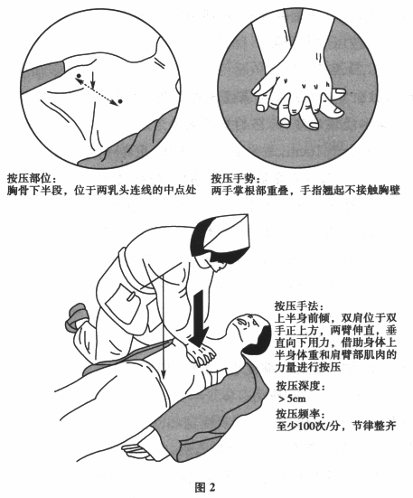

A.预防患者出血倾向
B.预防低血钙
C.预防血管痉挛
D.预防过敏反应
E.预防低血糖
参考答案：B
A.造成压疮的三个主要物理力是：压力、摩擦力、剪切力
B.局部组织持续受压超过2小时，可引起细胞不可逆损害
C.在炎性浸润期，未破损的小水疱应将其刺破，涂消毒液并包扎
D.对较大疮面的压疮必要时可行植皮术
E.为预防压疮发生，患者可口服硫酸锌，促进慢性溃疡愈合
参考答案：C
A.少于100mg/d
B.少于200mg/d
C.少于300mg/d
D.少于400mg/d
E.少于500mg/d
A.在患者临终前2～3个月实施临终关怀
B.以提高患者临终阶段的生存质量为宗旨
C.加强死亡教育
D.指导家属对患者进行生活照顾
E.为患者提供24小时护理服务
参考答案：B C D E
A.可待因
B.美沙酮
C.曲马朵
D.吗啡
E.哌替啶
参考答案：A C
题目解析：弱阿片类：可待因、右旋丙氧酚、氧可酮、曲马朵。
A.为便于吸收，服用铁剂时用茶水送下
B.鼻饲患者的药物应研碎、溶解后灌入
C.服用磺胺类药物后，不宜饮水
D.服用油剂可先在药杯内加少许凉开水
E.服用强心苷类药物前，应先测量患者心率
题目解析：对牙齿有腐蚀作用的药物,如酸类和铁剂,应用吸水管吸服后漱口,以保护牙齿。 某些磺胺类药物经肾脏排出,尿少时易析出结晶堵塞肾小管,服药后要多饮水。故AC错误。 服强心苷类药物时需加强对心率及节律的监测,脉率低于每分钟60次或节律不齐时应暂停服用,并告知医生。
A.胫骨骨折牵引
B.颈椎骨折颅骨牵引
C.肺部分泌物顺位引流
D.咯血窒息
E.胰胆管造影
参考答案：A C D
A.鸡肉
B.牛肉
C.羊肉
D.豆腐
E.鸡蛋
参考答案：A B C E
A.6分
B.7分
C.8分
D.9分
E.10分
F.11分
题目解析： 依据《基础护理学》第5版，昏迷患者对疼痛刺激有睁眼反应评为2分；言语模糊不清、字意难辨评为2分；肢体回缩评为4分。因此，该患者Glasgow评分应为8分，此题的正确选项是C。 患者为颅脑外伤，有右侧耳漏，如将患者头偏向左侧，会导致脑脊液逆流，增加颅内感染风险，正确的护理措施应是将头偏向耳漏侧；延长吸痰时间对患者是一种不良刺激，可能会加重患者脑组织缺氧、增加出血部位的出血。故此题C、E选项是错误的护理措施，其中关键选项为C。 翻身是卧床患者最简单和有效的解除压力的方法。患者骶尾部皮肤发红，且有右侧耳漏，故翻身体位宜选择半卧位与右侧倾30°体位交替；对于因受压出现的反应性充血的皮肤组织，不主张按摩，因为此时皮肤软组织已经受到损伤，按摩可能造成进一步的深部组织损伤；使用烤灯会增加局部氧耗量，并过度消耗局部皮肤水分；使用肥皂水清洁皮肤，易致皮肤干燥，可在皮肤上留下碱性残余物而刺激皮肤；适当降低室温，可避免患者因发热、大量出汗引起皮肤潮湿，同时可增加舒适感。故此题的正确选项为A、B、D，其中关键正确选项为B；此题的错误选项是C、E、F。 对低血钾患者静脉补钾的观察，应注意静脉补钾的量和速度，每日补充氯化钾3～6g/d；补钾速度不宜超过20～40mmol/h；钾能够减慢心率，补钾过多、过快，可致心搏骤停；心电图T波高尖，表示血钾增高；90%的钾由肾排泄，因此，应密切监测患者尿量变化；静脉滴注氯化钾，易发生血栓性静脉炎，尤其是在输注速度过快或浓度过高的情况下更易发生。故此题正确选项为B、C、E、F。 口腔护理操作前应保持气囊压力维持在25～30cmH O，以防止误吸；气管插管患者口腔分泌物pH多呈酸性，故不选择A、G。5%碳酸氢钠溶液与1%制霉菌素溶液可改变口腔微环境，对真菌感染有治疗作用；口腔护理时将床头抬高30°，以防止患者误吸；口腔护理操作前应听诊肺部呼吸音并及时吸痰，听诊呼吸音可了解呼吸道内痰液潴留情况，在口腔护理前吸净痰液，可提高口腔护理效果，并避免口腔护理时将口内分泌物误吸入气道，同时也可避免口腔护理后即刻吸痰，降低口腔护理的效果；湿化单层纱布覆盖口腔，可避免因口腔长期开放造成口腔口唇干燥及增加感染的风险。故此题的正确选项是B、C、D、E、F；错误选项是A、G。 对留置导尿管的患者，应使用个人专用的收集容器，及时清空集尿袋中的尿液；清空集尿袋中尿液时，要遵循无菌操作原则，避免集尿袋的出口触碰到收集容器；留取少量尿标本进行微生物病原学检测时，应当消毒导尿管后，使用无菌注射器抽取标本送检；留取大量尿标本时(此法不能用于普通细菌和真菌学检查)，可以从集尿袋中采集，但要避免打开导尿管和集尿袋的接口；长期留置导尿管患者，不宜频繁更换导尿管，当导尿管发生阻塞、或不慎脱出、或留置导尿装置的无菌性和密闭性被破坏时，应立即更换导尿管；应保证留置尿管的密闭性，不能打开尿管和集尿袋的接口；不主张使用含消毒剂或抗生素药物的生理盐水进行膀胱冲洗或灌注来预防泌尿系统感染。故关于留置导尿管的护理，A、C、E、F选项是正确的护理措施；B、D选项是错误的护理措施，此题应选择B、D项。 手术及创伤后早期，机体对胰岛素的敏感性减弱，机体处理葡萄糖的能力降低，而不是增强。故此题的答案是D。
A.用棉签清洁外耳道血性液体
B.给予患者床头抬高15°
C.将患者头偏左侧，防止呕吐物误吸
D.重点观察血压及瞳孔变化以防发生脑疝
E.延长吸痰时间以保证吸痰效果
F.为患者紧急采血化验各项生理指标和术前备血
G.为患者建立2条以上静脉通路
参考答案：C E
A.适当降低室温
B.半卧位与右侧倾30°体位交替
C.增加受压部位按摩次数
D.增加维生素C和锌元素的摄入
E.使用烤灯局部理疗
F.使用肥皂水为患者清洁皮肤
参考答案：A B D
A.监测患者心功能，以防心率过速
B.心电图示T波高尖，预示机体血钾增高
C.监测尿量变化是因为钾主要通过肾代谢
D.补钾总量不宜超过8g/d
E.补钾速度不宜超过20～40mmol/h
F.静脉滴注较高浓度的含钾溶液，警惕血栓性静脉炎的发生
参考答案：B C E F
A.保持并维持气囊压力在15～20cmHO
B.选择5%碳酸氢钠溶液作口腔护理液
C.选择1%制霉菌素溶液作口腔护理液
D.口腔护理时将床头抬高30°
E.口腔护理操作前听诊患者肺部呼吸音，必要时吸痰
F.湿化单层纱布覆盖口腔
G.患者口腔分泌物检测，pH多呈碱性
参考答案：B C D E F
A.留取大量尿标本可从集尿袋中采集
B.留取少量尿标本可打开导尿管和集尿袋的接口采集
C.应使用专用收集容器清空集尿袋中的尿液
D.为预防尿路感染，应使用含消毒剂或抗生素药物溶液做膀胱冲洗，每日1次
E.长期留置导尿管患者不宜频繁更换导尿管
F.在高危科室进行导尿管相关尿路感染(UTI)的目标性监测
参考答案：B D
A.机体蛋白质分解加速
B.机体处于高代谢和高分解状态
C.机体处于负氮平衡
D.机体处理葡萄糖能力增强
E.机体脂肪动员加速
F.机体可表现为血糖增高
参考答案：D
A.护士戴手套可不洗手
B.穿刺前，对皮肤不洁患者要先清洁再消毒
C.氯己定可用于穿刺部位的皮肤消毒
D.消毒剂待干后再行穿刺
E.成人宜选用上肢的背侧和桡侧进行穿刺置管
F.外周静脉导管置入穿刺不成功，可再次试穿刺
G.宜选择透明敷料覆盖穿刺部位
参考答案：A F
题目解析：戴手套不可取代洗手；可用于穿刺部位皮肤消毒的有乙醇、氯己定、碘附、碘酊等；外周静脉导管置入穿刺不成功，不得再次送入血管。故此题应选择的、叙述错误的选项是A、F，其中关键选项是F。
A.协助患者取半卧位或端坐位
B.吸氧2～4L/min，以纠正缺氧状态
C.给予40%乙醇湿化吸氧，以降低肺泡表面张力
D.观察心率、心律变化，做好除颤准备
E.使用吗啡的患者应重点观察有无呼吸抑制发生
F.记录每小时尿量
参考答案：A D E F
题目解析：患者此时出现了急性肺水肿。当患者在输液过程中并发急性肺水肿时，正确的护理措施是：协助患者取半卧位或端坐位；给予高流量吸氧6～8L/min，以提高肺泡内压力，减少肺泡内毛细血管渗出液的产生；应给予20%～30%的乙醇湿化吸氧，以减少肺泡内泡沫表面张力；密切观察病情，如心率、心律变化，做好除颤准备；使用吗啡可稳定患者情绪、减轻心脏负荷，对使用吗啡的患者，应重点观察有无呼吸抑制发生。故此题的正确选项是A、D、E、F；错误选项是B、C。
A.输液器每24小时更换一次
B.外周静脉留置针每48～72小时更换一次
C.穿刺点无菌敷料10天更换一次，如有渗液及时更换
D.肝素帽内有少量血渍时可继续观察使用
E.外周静脉留置针不宜用于短期静脉输液治疗
F.外周静脉留置针禁用于输注渗透压大于400 Osm/L的液体
G.对输液接头进行消毒时必须有一定的擦拭力量，目的是清除输液接头粗糙表面的微生物
参考答案：A G
题目解析：输液器应每24小时更换一次；外周静脉留置针应每72～96小时更换一次；穿刺点无菌敷料至少7天更换一次，如有渗液、渗血需及时更换；肝素帽内有少量血渍时要立即予以更换；外周静脉留置针宜用于短期静脉输液治疗；外周静脉留置针禁止用于输注渗透压大于600 Osm/L的液体。故此题的正确选项为A、G。
A.每一次输液之前(后)都应该冲洗导管
B.护士给药前，回抽血液遇到阻力时，可增大压力冲管
C.不含防腐剂的0.9%氯化钠溶液可作为冲管溶液
D.冲管最小液体量应为管腔内容量的1倍
E.脉冲式冲管、正压式封管
F.每次输液结束后直接封管，以降低装置阻塞风险
参考答案：B D F
题目解析：“2011年美国INS静脉输液治疗护理实践标准”推荐使用10ml管径的注射器进行冲(封)管，冲管最小液量应为管腔内容量和附加装置容量总额的2倍，对于采血或输液可能需要更大量的冲洗液；回抽血液遇到阻力时，不可加大压力冲管，不能使用暴力冲管；冲管溶液应使用不合防腐剂的0.9%氯化钠溶液；每次输液结束后不应直接封管，而应先冲管再封管，以减少装置阻塞的风险。故此题B、D、F选项是叙述错误的护理操作，是应选择的答案。
A.对每位输液患者履行告知义务
B.监测患者对新用药品首剂量的反应
C.严密监测易增加患者跌倒风险的药物应用情况
D.患者出现沿血管走向的条索状皮肤发红时，要降低输液速度继续严密观察
E.对穿刺部位监测48小时，以便及时发现输液后静脉炎
F.鼓励患者轻微活动，预防与导管相关的静脉血栓形成
参考答案：A B C E F
题目解析：当患者输液部位出现沿静脉走向的条索状发红时，提示发生静脉炎，应拔除留置针，进行相应处理，故D选项是错误的。此题的正确选项是A、B、C、E、F。
A.低血容量性休克
B.感染性休克
C.心源性休克
D.神经源性休克
E.高排低阻性休克
F.低排高阻性休克
题目解析：引起休克的原因很多，对休克有不同的分类。按休克的原因分类：可分为低血容量性、感染性、心源性、神经源性和过敏性休克。低血容量性休克常因大量出血或体液积聚在组织间隙，使有效循环量降低引起。按休克发生的始动因素分类：可分为低血容量性休克、心源性休克、心外阻塞性休克和分布性休克。按休克时血流动力学特点分类：可分为低排高阻性休克、高排低阻性休克。低排高阻性休克又称低动力性休克，由于皮肤血管收缩，血流量减少，使皮肤温度降低，又称冷休克。低血容量性、感染性、心源性休克均属于此类。故此题的正确选项是A、F，其中关键正确选项是A；此题的错误选项是B、C、D、E，其中关键错误选项是C。
A.患者取平卧位，注意肢体保暖
B.高流量吸氧，开放气道并保持通畅，准备气管插管物品
C.立即建立两条静脉通路：锁骨下中心静脉及右上肢肘正中静脉
D.监测心电、血压、脉搏、呼吸及血氧饱和度
E.留置导尿，准确记录尿量
F.紧急配血备血，先输新鲜血，再输平衡液
G.双下肢骨折部位固定
H.遵医嘱应用升压药及抗菌药物
参考答案：B C D E G H
题目解析： 引起休克的原因很多，对休克有不同的分类。按休克的原因分类：可分为低血容量性、感染性、心源性、神经源性和过敏性休克。低血容量性休克常因大量出血或体液积聚在组织间隙，使有效循环量降低引起。按休克发生的始动因素分类：可分为低血容量性休克、心源性休克、心外阻塞性休克和分布性休克。按休克时血流动力学特点分类：可分为低排高阻性休克、高排低阻性休克。低排高阻性休克又称低动力性休克，由于皮肤血管收缩，血流量减少，使皮肤温度降低，又称冷休克。低血容量性、感染性、心源性休克均属于此类。故此题的正确选项是A、F，其中关键正确选项是A；此题的错误选项是B、C、D、E，其中关键错误选项是C。 休克患者急救时，应取休克体位(即仰卧中凹位，头和躯干抬高20°～30°，下肢抬高15°～20°)，需维持正常体温；在积极处理引起休克的原发伤同时，需积极补充血容量，迅速建立两条以上静脉输液通道，大量快速补液，一般先输入扩充血容量作用迅速的晶体液，再输入扩充血容量作用持久的胶体液，必要时进行成分输血或输入新鲜全血；定时监测脉搏、呼吸、血压及VCP变化，并观察患者意识、口唇色泽、肢端皮肤颜色、温度及尿量的变化；维持有效的气体交换，给予鼻导管吸氧，氧浓度为40%～50%，氧流量为6～8L/min，维持呼吸道通畅，严重呼吸困难者，应协助医生行气管插管或气管切开；按医嘱合理应用升压药和有效抗菌药。故此题的正确选项是B、C、D、E、G、H，其中关键正确选项是C、D；此题的错误选项是A、F，其中关键错误选项是A。 心肺复苏是指对早期心跳呼吸骤停患者，通过采取人工循环、人工呼吸、电除颤等方法，帮助其恢复自主心跳和呼吸。它包括3个环节：基本生命支持、高级生命支持、心搏骤停后的综合管理。早期心肺复苏的基本程序是C、A、B，分别指胸外按压、开放气道、人工呼吸(2005版指南中的程序是A、B、C，2010版中的程序更改为C、A、B)；胸外按压时应每2分钟更换按压者，每次更换尽量在5秒内完成。故此题的正确选项是F；在其他不应该考虑的选项中，最不应该选择的是A。早期心肺复苏C-A-B程序示意图见图2。  心脏电复律时应充分暴露患者前胸，将两电极板上均匀涂满耦合剂或包以生理盐水浸湿的纱布，分别置于胸骨右缘第2～3肋间和心尖部，两电极板之间距离不小于10cm，与皮肤紧密接触，并有一定压力。按充电钮充电到所需功率，嘱任何人避免接触患者及病床，两电极板同时放电。心脏电复律时需掌握电极板的准确放置位置，让高压强电流在短时间内通向心脏，使心肌瞬间同时除极，以消除异位性快速心律失常，使之转复为窦性心律。室颤除颤能量选择：双向波150～200J，单向波推荐高能量除颤360J。故此题的正确选项是A、C、D、E、F；其中关键正确选项是D；此题的错误选项是B。 心肺复苏有效的指征包括：自主呼吸及心跳恢复(可听到心音、触及大动脉搏动、心电图示窦性，房性或交界性心律；瞳孔变化(散大的瞳孔回缩变小，对光发射恢复)；按压时可扪及大动脉搏动；收缩压达60mmHg左右；发绀的面色、口唇、指甲等转红润；脑功能好转(吞咽动作、自主呼吸、开始挣扎等)。故此题的正确选项是A、B、C、E、F；其中关键正确选项是A、B；此题的错误选项是D。 重症患者病情复杂，常会在转运过程中发生病情变化，危及生命。在平车转运过程中，护士应站在患者头侧端，并密切观察病情，发现病情变化及时实施救护；使用平车转运患者时，应将患者头部置于平车大轮端，以减轻颠簸。故此题的正确选项是A、B、C、D、F、G、H；其中关键正确选项是F；此题的错误选项是E。 Ramsay镇静评分标准为：1分-烦躁不安；2分-清醒、安静合作；3分-嗜睡，对指令反应灵敏；4分-浅睡眠状态，可迅速唤醒；5分-入睡，对呼叫反应迟钝；6分-深睡，对呼叫无反应。其中2～4分为镇静满意、5～6分为镇静过度。故此题的正确选项是C；此题的错误选项是A、B、D、E、F，其中关键错误选项是A。 ECMO是体外膜肺氧合(extracorporeal membrane oxygenation)的英文简称，是走出心脏手术室(指不局限于心脏手术室内应用)的体外循环技术，可以在重症监护室及其他地方使用。其原理是将体内的静脉血引出体外，经过特殊材质人工心肺旁路氧合后注入患者的动脉或静脉系统，起到部分心肺替代作用，以维持人体脏器组织氧合血供。由于使用ECMO时，需全身血液肝素化，易致出血，故其最常见的并发症是出血。因此，此题的正确选项是B；此题的错误选项是A、C、D、E、F，其中关键错误选项是E。
A.早期心肺复苏步骤为C-A-B
B.立即进行胸外按压，按压部位为胸骨中下1/3交界处
C.按压时两手重叠，手指离开胸壁，借助上半身重力垂直向下按压
D.胸外按压频率至少100次/分
E.按压幅度为胸骨下陷至少5cm或者胸廓前后径的1/3
F.胸外按压每5分钟更换按压者，并尽量在10秒内完成更换
G.开放气道可采用仰头一抬颏法或双下颌上提法
H.口对口人工呼吸时，缓慢向患者口内吹气(1秒以上)
I.每一次吹气完毕，应与患者口部脱离，抬头看患者胸部起伏状况
J.吹气频率10～12次/分，按压与通气比率为30：2
参考答案：F H
题目解析：当两人以上的急救人员在场时，每2分钟或每5个CPR循环后，急救人员应当轮换按压者，以防止按压者疲劳，按压质量下降，F错。所有人工呼吸均应持续吹气2秒以上，保证有足够量的气体进入并使胸廓起伏，H错。但过度通气可能有害，应避免。
A.患者平卧，将胸前衣物解开并移走其他异物
B.打开除颤器并选择能量200J
C.电极板上均匀涂上耦合剂
D.一个电极板置于右锁骨内侧正下方，一个电极板置于心尖部，两个电极板至少相距10cm以上
E.开始充电，充电结束后将电极板紧贴患者胸壁
F.双手同时按压放电开关
参考答案：A C D E F
题目解析： 引起休克的原因很多，对休克有不同的分类。按休克的原因分类：可分为低血容量性、感染性、心源性、神经源性和过敏性休克。低血容量性休克常因大量出血或体液积聚在组织间隙，使有效循环量降低引起。按休克发生的始动因素分类：可分为低血容量性休克、心源性休克、心外阻塞性休克和分布性休克。按休克时血流动力学特点分类：可分为低排高阻性休克、高排低阻性休克。低排高阻性休克又称低动力性休克，由于皮肤血管收缩，血流量减少，使皮肤温度降低，又称冷休克。低血容量性、感染性、心源性休克均属于此类。故此题的正确选项是A、F，其中关键正确选项是A；此题的错误选项是B、C、D、E，其中关键错误选项是C。 休克患者急救时，应取休克体位(即仰卧中凹位，头和躯干抬高20°～30°，下肢抬高15°～20°)，需维持正常体温；在积极处理引起休克的原发伤同时，需积极补充血容量，迅速建立两条以上静脉输液通道，大量快速补液，一般先输入扩充血容量作用迅速的晶体液，再输入扩充血容量作用持久的胶体液，必要时进行成分输血或输入新鲜全血；定时监测脉搏、呼吸、血压及VCP变化，并观察患者意识、口唇色泽、肢端皮肤颜色、温度及尿量的变化；维持有效的气体交换，给予鼻导管吸氧，氧浓度为40%～50%，氧流量为6～8L/min，维持呼吸道通畅，严重呼吸困难者，应协助医生行气管插管或气管切开；按医嘱合理应用升压药和有效抗菌药。故此题的正确选项是B、C、D、E、G、H，其中关键正确选项是C、D；此题的错误选项是A、F，其中关键错误选项是A。 心肺复苏是指对早期心跳呼吸骤停患者，通过采取人工循环、人工呼吸、电除颤等方法，帮助其恢复自主心跳和呼吸。它包括3个环节：基本生命支持、高级生命支持、心搏骤停后的综合管理。早期心肺复苏的基本程序是C、A、B，分别指胸外按压、开放气道、人工呼吸(2005版指南中的程序是A、B、C，2010版中的程序更改为C、A、B)；胸外按压时应每2分钟更换按压者，每次更换尽量在5秒内完成。故此题的正确选项是F；在其他不应该考虑的选项中，最不应该选择的是A。早期心肺复苏C-A-B程序示意图见图2。 心脏电复律时应充分暴露患者前胸，将两电极板上均匀涂满耦合剂或包以生理盐水浸湿的纱布，分别置于胸骨右缘第2～3肋间和心尖部，两电极板之间距离不小于10cm，与皮肤紧密接触，并有一定压力。按充电钮充电到所需功率，嘱任何人避免接触患者及病床，两电极板同时放电。心脏电复律时需掌握电极板的准确放置位置，让高压强电流在短时间内通向心脏，使心肌瞬间同时除极，以消除异位性快速心律失常，使之转复为窦性心律。室颤除颤能量选择：双向波150～200J，单向波推荐高能量除颤360J。故此题的正确选项是A、C、D、E、F；其中关键正确选项是D；此题的错误选项是B。 心肺复苏有效的指征包括：自主呼吸及心跳恢复(可听到心音、触及大动脉搏动、心电图示窦性，房性或交界性心律；瞳孔变化(散大的瞳孔回缩变小，对光发射恢复)；按压时可扪及大动脉搏动；收缩压达60mmHg左右；发绀的面色、口唇、指甲等转红润；脑功能好转(吞咽动作、自主呼吸、开始挣扎等)。故此题的正确选项是A、B、C、E、F；其中关键正确选项是A、B；此题的错误选项是D。 重症患者病情复杂，常会在转运过程中发生病情变化，危及生命。在平车转运过程中，护士应站在患者头侧端，并密切观察病情，发现病情变化及时实施救护；使用平车转运患者时，应将患者头部置于平车大轮端，以减轻颠簸。故此题的正确选项是A、B、C、D、F、G、H；其中关键正确选项是F；此题的错误选项是E。 Ramsay镇静评分标准为：1分-烦躁不安；2分-清醒、安静合作；3分-嗜睡，对指令反应灵敏；4分-浅睡眠状态，可迅速唤醒；5分-入睡，对呼叫反应迟钝；6分-深睡，对呼叫无反应。其中2～4分为镇静满意、5～6分为镇静过度。故此题的正确选项是C；此题的错误选项是A、B、D、E、F，其中关键错误选项是A。 ECMO是体外膜肺氧合(extracorporeal membrane oxygenation)的英文简称，是走出心脏手术室(指不局限于心脏手术室内应用)的体外循环技术，可以在重症监护室及其他地方使用。其原理是将体内的静脉血引出体外，经过特殊材质人工心肺旁路氧合后注入患者的动脉或静脉系统，起到部分心肺替代作用，以维持人体脏器组织氧合血供。由于使用ECMO时，需全身血液肝素化，易致出血，故其最常见的并发症是出血。因此，此题的正确选项是B；此题的错误选项是A、C、D、E、F，其中关键错误选项是E。
A.自主呼吸及心跳恢复
B.瞳孔变化：散大瞳孔回缩变小，对光反应恢复
C.按压时可扪及大动脉搏动
D.收缩压达50mmHg以上
E.口唇、面色、甲床等颜色转红润
F.脑功能好转：肌张力增高，出现自主呼吸、吞咽动作
A.移动前需检查并确认平车处于完好备用状态
B.挪动患者时，应将平车推至与床平行、并紧靠床边固定
C.采用4人以上搬运法，搬运时动作轻稳，协调一致
D.保护患者安全、舒适，注意保暖，骨折部位固定好再搬运
E.将患者头部置于平车小轮端，以减轻颠簸与不适
F.推车时车速适宜，护士站于患者头侧以观察病情
G.下坡时患者头部应位于平车高处一端
H.搬运过程中，妥善安置各种管路及抢救仪器
参考答案：A B C D F G H
A.无任何反应
B.对轻叩眉间或强声刺激反应迟钝
C.对轻叩眉间或强声刺激反应敏捷
D.对指令有反应
E.清醒、安静合作
F.焦虑不安或烦躁
A.感染
B.出血
C.过敏
D.肾衰竭
E.血栓形成
F.溶血
A.1～2气管环
B.2～3气管环
C.3～4气管环
D.4～5气管环
E.5～6气管环
F.6～7气管环
参考答案：B C
题目解析： 气管是以多个缺口向后的\'C\'形软骨环为支架，以保证气流的畅通。气管有16～20个气管环，可分为颈、胸两段，1～8环位于颈部。临床气管切开的部位常选择在第2～4气管软骨环的前正中线处，可选2～3或3～4气管环，一般不低于第5气管环，以防累及血管，并发出血，或伤及胸膜顶而危及生命。因此，此题的正确选项是B、C。 适宜的室内湿度应保持在60%～70%，防止因空气干燥不利于痰液咳出或吸出；吸痰时应严格无菌操作，使用一次性吸痰管，每次吸痰后更换吸痰管；吸痰前应先加大氧浓度至100%，再脱机吸痰，避免患者缺氧；呼吸机湿化罐内应及时添加无菌注射用水，维护人工气道的温湿化功能，避免使用生理盐水，因为会生成电解质结晶，对呼吸机造成损害；在气管切开应用呼吸机维持呼吸的过程中，预防感染是最重要的气道管理措施，呼吸机管道应每周更换消毒.严格按照规范要求管理，避免细菌感染的发生。故此题的正确选项是B、C、E；错误选项是A、D、F，其中最不应该的选项是D。 护士进行吸痰操作时，如时间过长，患者易发生缺氧发绀症状；时间过短，则吸痰不彻底，为无效吸痰。因此，护士每次吸痰的时间应不超过15秒，且连续吸痰不能超过3次。故此题的正确选项是D。 气管切开的并发症有多种，包括套管脱出、出血、气胸、纵隔气肿、皮下气肿、感染、气管壁溃疡、气管瘘管、气管食管瘘、拔管困难等。颈部主要的腺体是甲状腺，气管切开前要了解患者颈前有无甲状腺肿增大等病变，根据解剖位置和病情，采取相应措施，通常不会造成腺体损伤。因此，腺体损伤不是气管切开的并发症，故不选择G。 在气管切开套管意外脱出的情况下，首要的应急处理措施是A，必须保证气道通畅，为下一步治疗赢得时间；如果气管切开时间超过1周，窦道已经形成时，可更换套管重新置入；如果气管切开时间在1周之内，由于窦道尚未形成，应立即保持呼吸道通畅，配合医生进行气管插管，以确保气道通畅。因此，此题的正确选项是A、B、C、F；而D、E选项是与正确的处理原则相反的错误叙述，不应选择。
A.室内湿度保持50%～60%
B.吸痰时应先加大氧浓度至100%
C.使用一次性吸痰管
D.呼吸机管道每月更换消毒
E.加强气道湿化管理
F.呼吸机湿化罐内及时添加生理盐水
参考答案：B C E
A.＜30秒
B.＜25秒
C.＜20秒
D.＜15秒
E.＜12秒
F.＜10秒
G.＜5秒
B.皮下气肿
C.套管脱出
D.气胸
E.出血
F.气管壁溃疡
G.腺体损伤
H.气管--食管瘘
参考答案：A B C D E F H
A.立即用无菌止血钳撑开气管切口处
B.立即通知医生根据情况处理
C.迅速准备好抢救药品和物品
D.气管切开时间超过1周者，进行气管插管
E.气管切开时间1周之内者，更换套管重新置入
F.严密观察生命体征及血氧饱和度
参考答案：A B C F
A.营养状况正常
B.存在营养不良风险
C.存在营养不良
D.体重指数正常
E.体重指数低于正常
F.体重指数高于正常
G.无法判断
题目解析：从实验室检查结果可以发现，患者白蛋白23g/L，低于正常值(白蛋白正常值＞30g/L)，首先可以判断患者存在营养不良。白蛋白值的范围有助于判断营养不良的程度：轻度营养不良，白蛋白为30～25g/L；中度营养不良，白蛋白为24.9～20g/L，重度营养不良，白蛋白＜20g/L。可以判断该患者为中度营养不良。体重指数(英文为body mass index，BMI)是用体重公斤数除以身高米数平方得出的数字，即：BMI=体重(kg)÷［身高(m)］ ，是目前国际上常用的衡量人体胖瘦程度及是否健康的一个标准。此患者的BMI=53÷(1.70×1.70)=18.34。按照WHO的标准，体重指数≥25为超重，≥30为肥胖，＜18.5为消瘦。亚洲标准为：≥23为超重，≥25为肥胖。中国标准为：≥24为超重，≥28为肥胖。此患者体重指数为18.34，低于正常，患者处于消瘦低体重状态。故此题的正确答案是C、E，首先应考虑的关键正确选项是C。 该患者目前首选的营养支持方案是C，即置管行肠内营养。置管行肠内营养是经胃肠道插入导管，给患者提供必需的食物、营养液、水及药物的一种管饲饮食方法，是临床为患者提供或补充营养的极为重要的方法之一。其目的是对不能经口进食的患者提供营养和治疗，如昏迷、口腔疾病或口腔手术后、上消化道肿瘤引起吞咽困难者、破伤风等不能张口者、病情危重及拒绝进食者等。目前该患者意识障碍、嗜睡，已影响正常进食，且无消化道出血和肠道感染等胃肠道插管的禁忌证。因此，应首选置管行肠内营养，以尽快纠正营养不良状况。 肠内营养置管的途径有：①鼻胃管，即导管经鼻腔插入胃内；②鼻肠管，即导管由鼻腔插入小肠；③胃造瘘管，即导管经胃造瘘口插入胃内；④空肠造瘘管，即导管经空肠造瘘口插入空肠内。根据此患者的具体情况，营养支持首选的途径是B、C，即选择鼻胃管或鼻肠管，将导管经鼻腔插入胃内或小肠，给予肠内营养支持。故此题中A、D、E、F、G是错误的选项，其中最不适宜的选项是D。 在鼻饲过程中患者出现了呛咳、呼吸急促，是误吸的典型表现。因此，护士在每次鼻饲之前应首先验证胃管是否在胃肠内，且是否通畅，可先用少量温水冲管后再进行喂食，鼻饲完毕后再次注入少量温开水，防止鼻饲液凝结堵塞导管。故此题的正确答案是A；在其他错误选项中，最不应该考虑的选项是E。 此题不应该考虑的选项是F，因误吸与营养液配方无直接关系。除F选项外，其余各项均是发生误吸后可以采取的正确处理措施。 每次鼻饲前应证实胃管的通畅性及位置的正确性，但不一定必须用生理盐水冲管，高钠血症患者应避免使用生理盐水冲管；鼻饲液应现用现配，不宜放置过久或者冷冻保存；鼻饲液温度应保持在38～40℃，避免过冷或过热；每次输注营养液前，以及在连续输注过程中，应每隔4小时抽吸评估胃内残留量；应定期监测肠内营养患者的电解质状况，以满足机体需求；营养袋应24小时更换，避免污染和预防感染。故此题的正确选项是C、E、F；此题的错误选项是A、B、D，其中B(鼻饲液配制后冷冻保存)是最不应该考虑的选项。
A.口服流质，少食多餐
B.外周静脉补液
C.置管行肠内营养
D.给予肠外营养支持
E.肠内营养+肠外营养
F.先治疗原发病再考虑营养支持
题目解析： 从实验室检查结果可以发现，患者白蛋白23g/L，低于正常值(白蛋白正常值＞30g/L)，首先可以判断患者存在营养不良。白蛋白值的范围有助于判断营养不良的程度：轻度营养不良，白蛋白为30～25g/L；中度营养不良，白蛋白为24.9～20g/L，重度营养不良，白蛋白＜20g/L。可以判断该患者为中度营养不良。体重指数(英文为body mass index，BMI)是用体重公斤数除以身高米数平方得出的数字，即：BMI=体重(kg)÷［身高(m)］ ，是目前国际上常用的衡量人体胖瘦程度及是否健康的一个标准。此患者的BMI=53÷(1.70×1.70)=18.34。按照WHO的标准，体重指数≥25为超重，≥30为肥胖，＜18.5为消瘦。亚洲标准为：≥23为超重，≥25为肥胖。中国标准为：≥24为超重，≥28为肥胖。此患者体重指数为18.34，低于正常，患者处于消瘦低体重状态。故此题的正确答案是C、E，首先应考虑的关键正确选项是C。 该患者目前首选的营养支持方案是C，即置管行肠内营养。置管行肠内营养是经胃肠道插入导管，给患者提供必需的食物、营养液、水及药物的一种管饲饮食方法，是临床为患者提供或补充营养的极为重要的方法之一。其目的是对不能经口进食的患者提供营养和治疗，如昏迷、口腔疾病或口腔手术后、上消化道肿瘤引起吞咽困难者、破伤风等不能张口者、病情危重及拒绝进食者等。目前该患者意识障碍、嗜睡，已影响正常进食，且无消化道出血和肠道感染等胃肠道插管的禁忌证。因此，应首选置管行肠内营养，以尽快纠正营养不良状况。 肠内营养置管的途径有：①鼻胃管，即导管经鼻腔插入胃内；②鼻肠管，即导管由鼻腔插入小肠；③胃造瘘管，即导管经胃造瘘口插入胃内；④空肠造瘘管，即导管经空肠造瘘口插入空肠内。根据此患者的具体情况，营养支持首选的途径是B、C，即选择鼻胃管或鼻肠管，将导管经鼻腔插入胃内或小肠，给予肠内营养支持。故此题中A、D、E、F、G是错误的选项，其中最不适宜的选项是D。 在鼻饲过程中患者出现了呛咳、呼吸急促，是误吸的典型表现。因此，护士在每次鼻饲之前应首先验证胃管是否在胃肠内，且是否通畅，可先用少量温水冲管后再进行喂食，鼻饲完毕后再次注入少量温开水，防止鼻饲液凝结堵塞导管。故此题的正确答案是A；在其他错误选项中，最不应该考虑的选项是E。 此题不应该考虑的选项是F，因误吸与营养液配方无直接关系。除F选项外，其余各项均是发生误吸后可以采取的正确处理措施。 每次鼻饲前应证实胃管的通畅性及位置的正确性，但不一定必须用生理盐水冲管，高钠血症患者应避免使用生理盐水冲管；鼻饲液应现用现配，不宜放置过久或者冷冻保存；鼻饲液温度应保持在38～40℃，避免过冷或过热；每次输注营养液前，以及在连续输注过程中，应每隔4小时抽吸评估胃内残留量；应定期监测肠内营养患者的电解质状况，以满足机体需求；营养袋应24小时更换，避免污染和预防感染。故此题的正确选项是C、E、F；此题的错误选项是A、B、D，其中B(鼻饲液配制后冷冻保存)是最不应该考虑的选项。
A.口服进食
B.鼻胃管
C.鼻肠管
D.胃造瘘管
E.周围静脉
F.中心静脉
G.PICC
A.有误吸可能
B.胃肠道不耐受
C.急性腹膜炎
D.胸腔积液
E.鼻饲管堵塞
F.急性胃肠炎
参考答案：A
A.调整患者为半卧位30°
B.鼓励咳嗽
C.必要时吸痰
D.抽吸胃液
E.评估胃内残留量
F.改用无乳糖配方
G.改用鼻-空肠管
参考答案：A B C D E G
A.鼻饲前用生理盐水冲洗胃管
B.鼻饲液配制后冷冻保存
C.定时评估胃内残留量
D.鼻饲液温度保持在35℃
E.定期监测电解质状况
F.营养袋需24小时更换
参考答案：C E F
微信关注